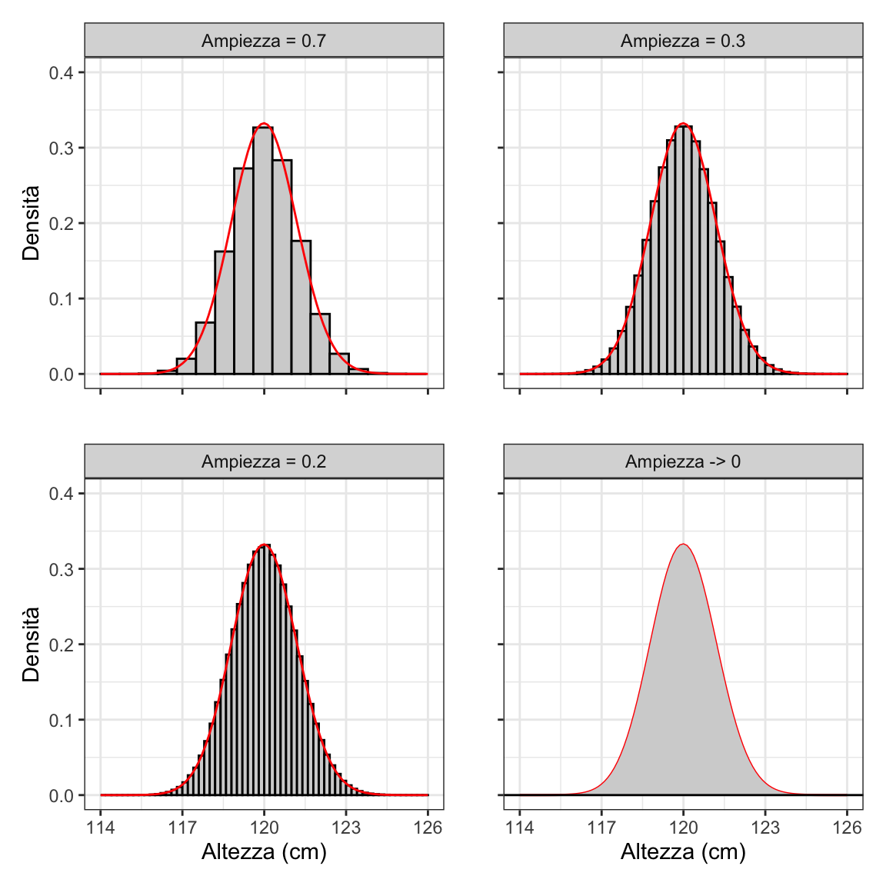
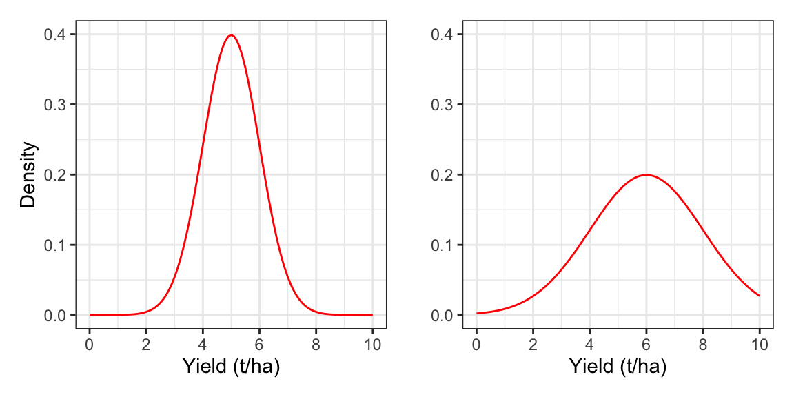
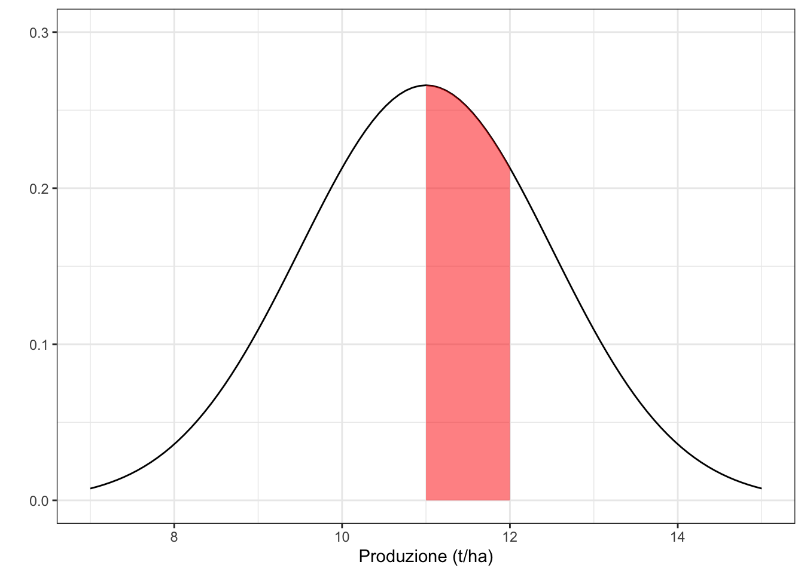
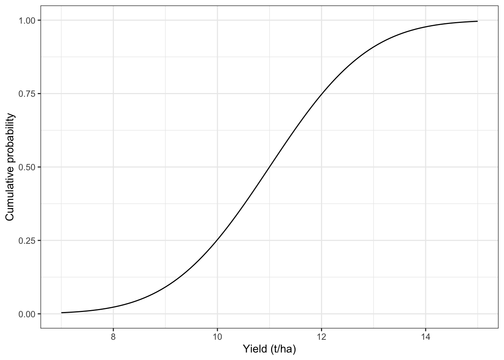

5 Modelli stocastici
Models are wrong, but some are useful. (G. Box)
Nel Capitolo precedente abbiamo visto che i fenomeni biologici possono essere descritti ricorrendo a modelli statistici, dotati di una componente deterministica che produce la risposta attesa (\(Y_E = f(X, \theta)\)) ed una componente stocastica (\(\varepsilon\)), che ‘confonde’ le nostre osservazioni (\(Y_O\)), rendendole diverse da quanto previsto dal modello deterministico (\(Y_O \neq Y_E\) con \(\varepsilon = Y_O - Y_E\). Abbiamo anche visto che i dati sperimentali possono essere utilizzati per specificare un modello generale (teorico), assegnando valori ben definiti ai parametri del modello.
A questo punto è lecito chiedersi: possiamo utilizzare questo modello così specificato per prevedere i risultati di un esperimento futuro dello stesso tipo? La risposta non è così ovvia; infatti, possiamo utilizzare la parte deterministica del modello per fare previsioni sul risultato atteso (\(Y_E\)), ma il risultato effettivo (\(Y_O\)) è totalmente imprevedibile, a causa degli elementi stocastici \(\varepsilon\), che cambiano casualmente a ogni tentativo di campionamento e confondono le nostre osservazioni.
Sebbene non abbiamo alcun modo di prevedere un risultato casuale (che altrimenti non potrebbe essere tale), possiamo fare alcune ipotesi ragionevoli. Immaginiamo di studiare l’altezza delle piante in un campo di avena ed immaginiamo che il valore atteso, come previsto dal modello, sia \(Y_E = 120\); dovremmo aspettarci che, se il modello è corretto, sia molto probabile osservare un valore di 119 o 121 cm (\(\varepsilon = \pm 1\)), meno probabile osservare 100 o 140 cm (\(\varepsilon = \pm 20\)), molto improbabile osservare 80 o 160 cm (\(\varepsilon = \pm 40\)). Di conseguenza, dovremmo poter assegnare una probabilità a ciascun possibile valore di \(\varepsilon\) (e quindi a ciascun possibile risultato osservato \(Y_O\)), utilizzando una qualche funzione di probabilità.
5.1 Funzioni di probabilità/densità
Contrariamente ai modelli causa-effetto, le funzioni di probabilità non servono a prevedere il risultato di un processo, ma solo ad elencare i possibili risultati ed assegnare ad ognuno di essi un livello di probabilità. Ciò è abbastanza semplice ed intuitivo quando si tratta di eventi ‘discreti’, cioè eventi che possono manifestarsi con una sola di una lista finita di possibili alternative. Ad esempio, pensiamo al sesso (M/F), alla mortalità (vivo/morto), alla germinabilità (germinato/non germinato); per questi fenomeni la probabilità viene calcolata come rapporto tra il numero degli eventi favorevoli e il numero totale di eventi possibili (probabilità ‘frequentista’). Ad esempio, se il nostro esperimento consistesse nell’estrarre una carta da un mazzo di carte francesi, potremmo calcolare la probabilità di estrarre un asso con il rapporto \(4/52 = 0.077\); oppure, se il nostro esperimento consistesse nell’effettuare due lanci di una moneta, potremmo calcolare la probabilità di ottenere due teste considerando che ci sono quattro eventi possibili (testa/testa, croce/testa, testa/croce e croce/croce) e quindi la probabilità di uno di questi è \(1/4 = 0.25\).
Nel caso di una variabile quantitativa, come l’altezza, non ha molto senso chiedersi, ad esempio, qual è la probabilità di trovare un individuo esattamente alto 100 cm (e non 100.0000001, o 99.99999). Capiamo da soli che questa probabilità è infinitesima. Al contrario, potremmo pensare di calcolare la probabilità di ottenere un valore compreso in un intervallo, per esempio da 99 a 101 cm: se la popolazione è ampia, ma finita, basta usare la regola che conosciamo e contare il numero di soggetti nell’intervallo, dividendoli per il numero totale di soggetti nella popolazione. Il problema però sta nel fatto che si viene ad introdurre un elemento arbitrario, cioè l’ampiezza dell’intervallo prescelto per calcolare la probabilità. Possiamo tuttavia pensare di calcolare la densità di probabilità, vale a dire il rapporto tra la probabilità di un intervallo e la sua ampiezza (cioè la probabilità per unità di ampiezza dell’intervallo; per questo si parla di densità). Ora, se immaginiamo di restringere l’intervallo fino a farlo diventare infinitamente piccolo, anche la probabilità tende a diventare infinitesima con la stessa ‘velocità’, in modo che la densità di probabilità di un singolo valore di concentrazione tende ad un numero finito (ricordate il limite del rapporto di polinomi?), come mostrato in Figura @ref(fig:figName50b).
La funzione di densità (PDF) rappresentata nella Figura @ref(fig:figName50b) è la gaussiana ed è così comune in agricoltura e biologia che è solitamente nota come curva normale. L’equazione è:
\[P(Y) = \frac{1}{{\sigma \sqrt {2\pi } }}\exp \left[{\frac{\left( {Y - \mu } \right)^2 }{2\sigma ^2 }} \right]\]
ove \(P(Y)\) è la densità di probabilità di una certa misura \(Y\), mentre \(\mu\) e \(\sigma\) sono rispettivamente la media e la deviazione standard della popolazione (per la dimostrazione si rimanda a testi specializzati). Le variabili casuali la cui densità può essere descritta con la curva di Gauss, prendono il nome di variabili normali o normalmente distribuite.
Guardando la curva di Gauss possiamo notare che ha una forma ‘a campana’ che dipende da solo da \(\mu\) e \(\sigma\) (figura @ref(fig:figName51)).

Per calcolare la densità gaussiana con R, possiamo usare la funzione dnorm(); ad esempio, se vogliamo conoscere la densità di probabilità di ottenere un produzione di 12 t/ha, campionando una parcella da una popolazione di parcelle con media pari a 11 e deviazione standard pari a 1,5, possiamo usare il codice fornito nel riquadro 5.1.
# Code box 5.1
#
# Gaussian density calculation
dnorm(12, mean = 11, sd = 1.5)
## [1] 0.2129653La densità non è una probabilità reale e non è interessante di per sé (almeno, non in termini assoluti), ma la PDF ha il vantaggio di restituire la probabilità di un intervallo di eventi come Area Sotto la Curva (Area Under the Curve: AUC). Ad esempio, la Figura @ref(fig:figName52) evidenzia l’AUC tra 11 e 12, che rappresenta la probabilità di campionare una percella con una produzione in quell’intervallo, partendo da una popolazione di parcelle con media pari a 11 e deviazione standard pari a 1.5.

Di conseguenza, l’AUC e, quindi, la probabilità, possono essere calcolate integrando la curva gaussiana su un intervallo; in relazione alla Figura @ref(fig:figName52), la probabilità tra 11 e 12 è 0.248 (vedere il riquadro 5.2). Più semplicemente, la funzione pnorm() restituisce l’AUC tra \(-\infty\) e qualsiasi valore \(y\) (Funzione di distribuzione cumulativa; vedere la Figura @ref(fig:figName52c)) e può essere utilizzata per evitare il calcolo di un integrale.
#Code box 5.2
# Integration of the gaussian density function
AUC <- integrate(function(x) dnorm(x, 11, 1.5), 11, 12)
AUC$value
## [1] 0.2475075
#
# Use of the cumulative probability function
# (same result as above)
pnorm(12, mean = 11, sd = 1.5) - pnorm(11, mean = 11, sd = 1.5)
## [1] 0.2475075
Le più importanti proprietà di una curva Gaussiano sono le seguenti:
- la curva ha due asintoti e tende a 0 quando x tende a infinito. Questo ci dice che se assumiamo che un fenomeno è descrivibile con una curva di Gauss, allora assumiamo che tutte le misure sono possibili, anche se la loro frequenza decresce man mano che ci si allontana dalla media;
- L’integrale della curva di densità gaussiana da \(-\infty\) a \(+\infty\) è uguale ad 1. Infatti la somma delle frequenze relative di tutte le varianti possibili non può che essere uguale ad 1;
- la curva è simmetrica. Questo indica che la frequenza dei valori superiori alla media è esattamente uguale alla frequenza dei valori inferiori alla media;
- dato \(\mu\) e \(\sigma\), la frequenza dei valori superiori a \(\mu + \sigma\) è 0.1587% ed è uguale alla frequenza dei valori inferiori a \(\mu - \sigma\), di modo che la frequenza dei valori contenuti all’interno dell’ intervallo \(\mu \pm \sigma\) è 0.683, come mostrato nel box sottostante
# Code box 5.3
# Probability of sampling from the interval # from ’mu - sigma’ to ’mu + sigma’
pnorm(120 + 2, 120, 2) - pnorm(120 - 2, 120, 2)
## [1] 0.6826895Ora arriviamo alla domanda più interessante: come utilizzare la curva gaussiana? Se la variabile che stiamo studiando è continua (ma, con un po’ di prudenza, potremmo includere anche conteggi e rapporti), potremmo supporre che l’elemento stocastico \(\varepsilon\) sia distribuito in modo gaussiano, con media uguale a 0 e deviazione standard uguale a \(\sigma\):
\[\varepsilon \sim \textrm{Norm}(0, \sigma)\]
Analogamente, potremmo supporre che il risultato di un esperimento sia distribuito in modo gaussiano con media uguale a \(Y_E\) (come previsto dal modello deterministico) e deviazione standard uguale a \(\sigma\):
\[Y_O \sim \textrm{Norm}(Y_E, \sigma)\]
Se questa ipotesi è ragionevole, si aprono delle possibilità molto interessanti. In particolare, data una popolazione ed il modello che la descrive, possiamo:
- calcolare le probabilità di ottenere un certo risultato osservato;
- simulare i risultati di esperimenti futuri.
Vediamo come possiamo operare in alcune situazioni piuttosto comuni.
5.2 Calcolare le probabilità
In pratica, se assumiamo che un modello completamente specificato possa descrivere adeguatamente un particolare fenomeno, possiamo utilizzare tale modello per prevedere il risultato atteso. Successivamente, se conosciamo anche la deviazione standard del termine di errore residuo, possiamo utilizzare l’equazione della curva gaussiana per calcolare la probabilità di qualsiasi possibile risultato osservato.
5.2.1 Esempio 5.1: Calcolare la probabilità in un esperimento misurativo
Ipotizziamo di avere un pozzo inquinato dai residui di una certa sostanza xeniobiotica ad una concentrazione pari a 120 \(mg/L\) ed ipotizziamo di effettuare l’analisi chimica per la determinazione della concentrazione dei residui, utilizzando uno strumento caratterizzato da un coefficiente di variabilità del 10%, che equivale ad una deviazione standard pari a 12 \(mg/L\) (\(\sigma = 12\)). Con queste informazioni possiamo rispondere a tutte le seguenti domande:
- Che modello possiamo utilizzare per descrivere i risultati di questo esperimento?
- Qual è la misura di concentrazione più probabile?
- Qual è la densità di probabilità di ottenere una concentrazione pari a 120 \(mg/L\)?
- Qual è la probabilità di ottenere una concentrazione inferiore a 110 \(mg/L\)?
- Qual è la probabilità di ottenere una concentrazione superiore a 130 \(mg/L\)?
- Qual è la probabilità di ottenere una concentrazione compresa tra 110 e 130 \(mg/L\)
- Quale concentrazione è superiore al 90% di tutte i valori ottenibili (90° percentile)?
- Quali sono quei due valori, simmetrici rispetto alla media e tali da formare un intervallo all’interno del quale cadono il 95% delle misure possibili?
Per questo esperimento misurativo, il modello della media è del tutto appropriato (\(Y_E = 120\) mg/L). Tuttavia, si tratta di un modello semplicistico, a causa del fatto che il nostro strumento chimico non è esente da errori di misura; di conseguenza, dovremmo aggiungere la componente stocastica, come \(Y_O = 120 + \varepsilon\), dove \(\varepsilon \sim \textrm{Norm}(0, \sigma = 12)\), ovvero \(Y_O \sim \textrm{Norm}(120, 12)\).
La risposta alla seconda domanda è banale (\(Y_E = 120\)), mentre per rispondere alle altre domande possiamo utilizzare le apposite funzioni di R. Per ogni distribuzione abbiamo a disposizione una funzione di densità (con prefisso ‘d’), una funzione di probabilità cumulata (con prefisso ‘p’) e una funzione inversa (prefisso ‘q’) che consente di calcolare i percentili. Nel caso della funzione gaussiana, abbiamo le funzioni dnorm(), pnorm() e qnorm(), che possiamo utilizzare per calcolare densità, probabilità e percentili, come indicato di seguito. Per la quarta domanda dobbiamo considerare che la funzione pnorm() fornisce la coda bassa della funzione, mentre dobbiamo individuare la coda alta (altezze maggiori della soglia data). Pertanto, abbiamo due possibili soluzioni, come indicato più sotto.
# Code box 5.4
# Calcolo delle probabilità per un esperimento misurativo
# Domanda 2
dnorm(120, mean = 120, sd = 12)
## [1] 0.03324519
# Domanda 3
pnorm(110, mean = 120, sd = 12)
## [1] 0.2023284
# Domanda 4
pnorm(130, mean = 120, sd = 12, lower.tail = F)
## [1] 0.2023284
1 - pnorm(130, mean = 120, sd = 12)
## [1] 0.2023284
# Domanda 5
pnorm(130, mean = 120, sd = 12) - pnorm(110, mean = 120, sd = 12)
## [1] 0.5953432
# Domanda 6
qnorm(0.9, mean = 120, sd = 12)
## [1] 135.3786
# Domanda 7
qnorm(0.025, mean = 120, sd = 12)
## [1] 96.48043
qnorm(0.975, mean = 120, sd = 12)
## [1] 143.51965.2.2 Esempio 5.2: Calcolo della probabilità per un esperimento di degradazione
Immaginiamo di sapere che la concentrazione \(C\) di una sostanza erbicida nel suolo diminuisce con il tempo \(t\) secondo secondo una cinetica del primo ordine, che può essere descritta con il modello: \(C = C_0 \times 10{^{-0.05 \, t}}\), dove \(C_0\) è la concentrazione iniziale dell’erbicida. Supponiamo di arricchire un campione di suolo con questa sostanza fino a una concentrazione \(C_0 = 75\) ng g-1, qual è la probabilità di osservare una concentrazione inferiore a 3 ng g-1 a 20 giorni dal trattamento? Si consideri che tutte le fonti sconosciute di errore sperimentale possono essere considerate gaussiane, con un coefficiente di variabilità pari al 10%.
Supponendo che la relazione causa-effetto sia affidabile, la concentrazione prevista a 20 giorni dal trattamento dovrebbe essere 4.22 ng g-1 (Box 5.5). Tuttavia, il risultato osservato dipende dall’errore sperimentale, che è un evento casuale imprevedibile; se assumiamo che la funzione di probabilità per la concentrazione osservata sia gaussiana, con media di 4.22 e deviazione standard di 0.422 (ovvero 7.5 volte il 10%), la probabilità di ottenere una misura minore o uguale a 3 ng g-1 è inferiore allo 0,2%, il che dimostra che si tratta di un evento alquanto improbabile.
# Code box 5.5
# Concentrazione attesa
Ct <- 75 * 10^(-0.05 * 25)
Ct
## [1] 4.21756
# Probabilità di osservare una concentrazione <= 3
pnorm(3, Ct, Ct * 0.1)
## [1] 0.0019453985.3 Simulazione stocastica
Guardandolo dal punto di vista che abbiamo appena illustrato, ogni esperimento scientifico non è altro che un’operazione di campionamento da una certa distribuzione di probabilità, che può essere simulato impiegando un generatore di numeri casuali, con un procedimento che prende il nome di ‘metodo Monte Carlo’.
In pratica, possiamo: 1. Simulare i risultati attesi utilizzando il modello causa-effetto selezionato per ciascuna unità sperimentale. 2. Associare la variabilità casuale ai risultati attesi campionando da una PDF gaussiana.
In R, il generatore di numeri casuali gaussiani è implementato nella funzione rnorm(), che richiede tre argomenti: il numero di valori casuali che intendiamo estrarre, la media della distribuzione e la sua deviazione standard.
5.3.1 Esempio 5.3. Simulazione di un esperimento misurativo
Prendiamo ancora il nostro pozzo inquinato e contenente 120 \(mg/L\) di un erbicida e immaginiamo di misurare la concentrazione di tre campioni d’acqua, utilizzando uno strumento caratterizzato da \(\sigma = 12\). I risultati di questo esperimento possono essere simulati:
- usando il modello deterministico per definire il valore atteso della produzione per ogni dose di azoto, che sarà la stessa per tutte le repliche (in questo caso \(Y_E = 120\));
- utilizzando un generatore gaussiano di numeri casuali, per simulare gli effetti stocastici, campionandoli da una distribuzione normale, con le caratteristiche desiderate.
# Code box 5.6
# Example 5.3
# Simulazione di un esperimento misurativo
set.seed(1234)
Y_E <- 120
epsilon <- rnorm(3, 0, 12)
Y_O <- Y_E + epsilon
Y_O
## [1] 105.5152 123.3292 133.0133La generazione di numeri casuali con il computer viene fatta attraverso algoritmi che, a partire da un seed iniziale, forniscono sequenze che obbediscono a certe proprietà fondamentali (numeri pseudo-casuali). Il comando set.seed(1234) ci permette di partire da un seed predefinito, in modo che, chiunque ripeta la simulazione con lo stesso seed, possa ottenere gli stessi risultati ottenuti nel corso della scrittura di questo libro.
Un’altra cosa da notare è che il nome della funzione che genera numeri casuali è formato dal nome della distribuzione (‘norm’) più il prefisso ‘r’; il primo argomento definisce il numero di valori che vogliamo ottenere (tre, tanti quante sono le repliche), mentre il secondo ed il terzo rappresentano, rispettivamente, la media e la deviazione standard della distribuzione.
5.3.2 Esempio 5.4: simulazione di un esperimento di fertilizzazione
Con la stessa tecnica, possiamo provare a simulare i risultati di un esperimento per determinare la resa del grano trattato con quattro diversi dosaggi di azoto (0, 60, 120 e 180 kg/ha); immaginamo che il disegno sperimentale sia completamente randomizzato con quattro repliche (sedici dati in totale) e il modello causa-effetto sia:
\[Y_O = 25 + 0.15 \, X + \varepsilon\]
ove: \(Y_O\) è la produzione osservata, \(X\) è la dose di azoto, e l’elemento stocastico è \(\varepsilon \sim N(0, \sigma = 2.5)\). Il codice per la simulazione è riportato nel box sottostante.
# Code box 5.7
# Esempio 5.4
# Simulare un esperimento di fertilizzazione
set.seed(1234)
# Creating the vector to host the experimental design
Dose <- rep(c(0, 60, 120, 180), each=4)
# Predicting the expected yield
Yield_E <- 25 + 0.15 * Dose
# Predicting the residuals
epsilon <- rnorm(16, 0, 2.5)
# Predicting the observations
Yield <- Yield_E + epsilon
dataset <- data.frame(Dose, Yield)
dataset
## Dose Yield
## 1 0 21.98234
## 2 0 25.69357
## 3 0 27.71110
## 4 0 19.13576
## 5 60 35.07281
## 6 60 35.26514
## 7 60 32.56315
## 8 60 32.63342
## 9 120 41.58887
## 10 120 40.77491
## 11 120 41.80702
## 12 120 40.50403
## 13 180 50.05937
## 14 180 52.16115
## 15 180 54.39874
## 16 180 51.724295.3.3 Esempio 5.5: Simulazione di una prova di confronto varietale
Proviamo ora a simulare i risultati di un esperimento di confronto varietale, con cinque genotipi in quattro blocchi (20 osservazioni in totale). La relazione causa-effetto è la seguente:
\[Y_{O(ij)} = \mu + \alpha_i + \gamma_j + \varepsilon_{ij}\]
dove \(Y_O\) è la resa osservata, \(\mu\) è la resa media del primo genotipo nel primo blocco, \(\alpha\) è l’effetto del genotipo e \(\gamma\) è l’effetto del blocco a cui appartiene ogni parcella. Poniamo che \(\mu\) sia 48 q/ha, i valori di \(\alpha\) siano rispettivamente 0, 1, 3, -2, -3 per i cinque genotipi, mentre i valori di \(\gamma\) siano rispettivamente 0, -2, 3, 1 per i quattro blocchi. Poniamo inoltre che l’errore sperimentale \(\varepsilon\) sia gaussiano con media uguale a 0 e \(\sigma = 5\).
Con questi dati, il processo di simulazione è mostrata nel riquadro sottostante.
# Code box 5.8
# Esempio 5.5
# Simulazione di un esperimento varietale
set.seed(1234)
# Prepare the vectors for the experimental design
Genotype <- rep(LETTERS[1:5], each=4)
Block <- rep(1:4, times = 5)
# Input the value of parameters
mu <- 48
alpha <- rep(c(0, 1, 3, -2, -3), each = 4)
gamma <- rep(c(0, -2, 3, 1), times = 5)
sigma <- 5
# Predict the expected yields
Yield_E <- mu + alpha + gamma
# Simulate the residuals and the observed values
epsilon <- rnorm(20, 0, sigma)
Yield <- Yield_E + epsilon
dataset <- data.frame(Genotype, Block, Yield)
dataset
## Genotype Block Yield
## 1 A 1 41.96467
## 2 A 2 47.38715
## 3 A 3 56.42221
## 4 A 4 37.27151
## 5 B 1 51.14562
## 6 B 2 49.53028
## 7 B 3 49.12630
## 8 B 4 47.26684
## 9 C 1 48.17774
## 10 C 2 44.54981
## 11 C 3 51.61404
## 12 C 4 47.00807
## 13 D 1 42.11873
## 14 D 2 44.32229
## 15 D 3 53.79747
## 16 D 4 46.44857
## 17 E 1 42.44495
## 18 E 2 38.44402
## 19 E 3 43.81414
## 20 E 4 58.079185.4 Conclusioni
Come conclusione di questa parte, possiamo fare le seguenti affermazioni:
- i modelli possono fornire una descrizione molto utile delle relazioni causa-effetto e possono essere utilizzati per descrivere i risultati sperimentali in una data situazione, sebbene possano solo prevedere il valore atteso;
- a causa della presenza di effetti casuali, il risultato esatto di ogni singolo individuo è imprevedibile; tuttavia possiamo calcolare la probabilità di ottenere uno dei diversi risultati possibili utilizzando modelli stocastici, sotto forma di funzioni di densità di probabilità (PDF);
- la PDF gaussiana è quella più utilizzata per le variabili continue, ma, con le dovute precauzioni (vedi più avanti) può essere utilizzata anche con conteggi e rapporti.
Sebbene in questo capitolo abbiamo considerato solo un modello stocastico (PDF gaussiana), esistono diverse altre funzioni di densità di probabilità, che potrebbero essere utilizzate per raggiungere lo stesso obiettivo, ovvero descrivere la variabilità casuale. Ad esempio, nel resto di questo libro incontreremo la distribuzione t di Student e la distribuzione di Fisher-Snedecor. Chi fosse interessato a questo argomento, potrà trovare numerose informazioni nel grande libro di Ben Bolker (Bolker 2008) oppure nel testo di Schabenberger and Pierce (2002).
5.5 Domande ed esercizi
- Un ricercatore sta studiando una popolazione di insetti ed ha valutato che la loro lunghezza è distribuita normalmente, con \(\mu = 23 \, \textrm{mm}\) e \(\sigma = 1.6\). Calcolare la probabilità di estrarre individui con lunghezza: (1) maggiore di 25, (2) minore di 21 e (3) compresa tra 21 e 25.
- Una macchina confezionatrice riempe automaticamente delle confezioni di seme. Il peso dichiarato sulla confezione è 12.5 kg, ma la precisione della macchina è \(\pm\) 1 kg. Calcolare la probabilità che una confezione contenga: (1) meno del peso dichiarato, (2) meno di 12 kg e (3) più di 13 Kg. Si vuole regolare la macchina in modo che non più del 5% dei sacchi contenga un peso inferiore a quello dichiarato. Su quale peso dovrebbe essere regolata la macchina di riempimento? (SUGGERIMENTO: se io regolo la macchina a 12.5 kg, la quantità effettivamente erogata è normalmente distribuita, con media 12.5 e deviazione standard 1. In questo caso, c’è un 5% di probabilità di erogare meno di _____ kg; di conseguenza, devo alzare la media di ____ kg per far si che la quantità erogata non sia inferiore a 12.5 kg, se non nel 5% dei casi)
- Uno strumento di analisi ha un coefficiente di variabilità pari al 10%. Ammettendo di utilizzare quello strumento su una matrice la cui concentrazione è 10 ng/g, calcolare la probabilità di ottenere una misura: (1) inferiore a 9 ng/g, (2) superiore a 11 ng/g e (3) compresa tra 9 e 11 ng/g.
- Un erbicida si degrada nel terreno seguendo una cinetica del primo ordine (\(Y = 100 \, e^{-0.07 \, t}\)), dove Y è la concentrazione al tempo t. Dopo aver spruzzato questo erbicida, che probabilità abbiamo di osservare, dopo 50 giorni, una concentrazione che risulti al disotto della soglia di tossicità per i mammiferi (2 ng/g)? Tenere conto che lo strumento di misura produce un coefficiente di variabilità del 20%
- Una sostanza xenobiotica si degrada nell’acqua a 20°C seguendo una cinetica del primo ordine (\(Y = C_0 \, e^{-0.06 \, t}\), dove Y è la concentrazione al tempo t. Simulare i risultati di un esperimento in cui, dopo la somministrazione di questa sostanza alla dose \(C_0 = 63\) ng/mL, facciamo dodici prelievi settimanali e misuriamo la concentrazione del residuo. Considerare che (1) l’errore sperimentale è gaussiano e omoscedastico sul logaritmo della concentrazione, con media 0 e deviazione standard pari a 0.25; (2) l’esperimento è a randomizzazione completa con tre repliche.
- Una coltura produce in funzione della sua fittezza, secondo la seguente relazione: \(Y = 0.8 + 0.8 \, X - 0.07 \, X^2\). Stabilire la fittezza necessaria per ottenere il massimo produttivo (graficamente o analiticamente). Valutare la probabilità di ottenere una produzione compresa tra 2.5 e 3 t/ha, seminando alla fittezza ottimale. Considerare che la variabilità stocastica è del 12%.
- La tossicità di un insetticida varia con la dose, secondo la legge log-logistica: \(Y = \frac{1}{1 + exp\left\{ -2 \, \left[log(X) - log(15)\right] \right\}}\), dove Y è la proporzione di animali morti e X è la dose. Se trattiamo 150 insetti con una dose pari a 35 g, qual è la probabilità di trovare più di 120 morti? Considerare che la risposta è variabile da individuo ad individuo nella popolazione e questa variabilità può essere approssimata utilizzando una distribuzione gaussiana con una deviazione standard pari a 0.10.
- Simulare i risultati di un esperimento varietale, con sette varietà di frumento e quattro repliche. Considerare che il modello deterministico è un modello ANOVA, nel quale vengono definite le medie delle sette varietà (valori attesi). Decidere autonomamente sui parametri da impiegare per la simulazione (da \(\mu_1\) a \(\mu_7\) e \(\sigma\))
- Considerando il testo dell’esercizio 6, simulare un esperimento in cui la coltura viene seminata a fittezze di 2, 4, 6, 8 piante per metro quadrato, con quattro repliche.
- Considerando il testo dell’esercizio 7, simulare un esperimento in cui l’insetticida viene utilizzato a cinque dosi crescenti (a vostra scelta), con quattro repliche.
5.6 Soluzioni
# Esercizio 2
delta <- 125 - qnorm(0.05, 125, 1)
pnorm(125, 125 + delta, 1)
## [1] 0.05# Esercizio 4
res <- 100 * exp(-0.07 * 50)
res
## [1] 3.019738
pnorm(2, res, res * 20/100)
## [1] 0.04566198# Esercizio 5
time <- rep(seq(0, 84, 7), each = 3)
logConc <- log(63) - 0.06 * time + rnorm(39, 0, 0.25)
Conc <- exp(logConc)
Conc
## [1] 65.1476858 55.7269155 56.4298209 46.4340064 34.8030374 28.8204008
## [7] 31.4004950 21.0567420 27.0950255 14.1419785 23.5401886 15.8669203
## [13] 9.8333013 10.3586323 7.8135653 5.7616847 4.4732929 5.5172880
## [19] 4.7094035 4.5116383 7.2827519 2.5496958 2.6893340 3.1048921
## [25] 1.7066796 1.7177343 1.6591496 1.0514164 1.2613438 1.2698798
## [31] 0.6014733 0.8167810 0.7159910 0.4816171 0.5960429 0.7145507
## [37] 0.6157521 0.3361480 0.6093345
mod <- lm(log(Conc) ~ time)
summary(mod)
##
## Call:
## lm(formula = log(Conc) ~ time)
##
## Residuals:
## Min 1Q Median 3Q Max
## -0.41736 -0.14930 -0.02928 0.05614 0.51074
##
## Coefficients:
## Estimate Std. Error t value Pr(>|t|)
## (Intercept) 3.994864 0.068446 58.37 <2e-16 ***
## time -0.059411 0.001383 -42.96 <2e-16 ***
## ---
## Signif. codes: 0 '***' 0.001 '**' 0.01 '*' 0.05 '.' 0.1 ' ' 1
##
## Residual standard error: 0.2262 on 37 degrees of freedom
## Multiple R-squared: 0.9803, Adjusted R-squared: 0.9798
## F-statistic: 1846 on 1 and 37 DF, p-value: < 2.2e-16# Esercizio 6
# curve(0.8 + 0.8*x - 0.07*x^2, xlim = c(0,10))
# D(expression(0.8 + 0.8*x - 0.07*x^2), "x")
x <- 0.8/(2*0.07)
prod <- 0.8 + 0.8*x - 0.07*x^2
prod
## [1] 3.085714
pnorm(3, prod, prod * 0.12) - pnorm(2.5, prod, prod * 0.12)
## [1] 0.3516216# Esercizio 7
prob <- 1/(1 + exp ( -2 * (log(35) - log(15))))
prob
## [1] 0.8448276
pnorm(120, 150*prob, 10, lower.tail = F)
## [1] 0.7493398